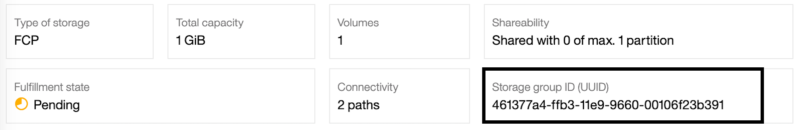
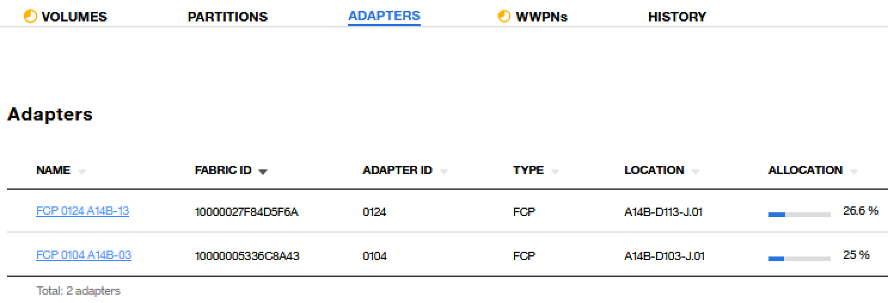

LinuxONE DPM3.1+TS3500实施手册
2019年11月4日
环境准备
- 操作系统
Suse12 Sp4
- 带库
IBM System Storage TS3500 Tape Library, LTO Ultrium-6
DMP3.1默认没有实现对带库设备的识别.需要在HMC里进行手工的配置并执行一段python代码来正确识别带库设备. 请参照接下来的内容进行操作.
HMC操作
- 创建HMC账号
登录 acsadmin, 增加一个新的账号,如tapeuser,带有如下权限:

为新用户增加权限:
- Configure Storage - Storage Administrator
- Configure Storage - System Programmer 的权限
- 为新用户(tapeuser)增加remote api权限


- 创建一个Storage Group, 并添加一块任意大小的boot盘.
- 将Storage Group分配给LPAR
编辑Python脚本
在附件里可以找到一个名为 attach_tape.py 的脚本
脚本需要修改的地方:
# 设定HMC的IP地址
hmc_address = "172.16.31.232"
# 设定账号
hmc_userid = "tapeuser"
# 设定密码
hmc_password = "password"
# 设定CPC名字
cpc_name = 'BZ13'
# 设定Storage Group的UUID,具体UUID获取方式请参考后面截图
storage_group_uuid_customer = "38382ee2-b85d-11e9-81f0-00106f23eea9"
# 设定HBA卡的UUID,具体UUID获取方式请参考后面截图. 这里是一个数组
# 具体数量以HBA数量为准
adapter_port_list = ['1A424A76-9C8D-11E9-A962-00106F23EEA9',
'18F97270-9C8D-11E9-A962-00106F23EEA9',]通过如下方式获取Storage Group的UUID:

通过如下方式获取HBA卡的UUID:

运行脚本
在python环境下,执行 attach_tape.py
执行成功后,可以在storage group里看到HBA已经正确识别.
如果执行成功,注意不要再次重复执行该脚本.
以下样例使用的是两块HBA卡的识别情况.

接下来介绍连接IBM带库需要用到哪些软件, 以及下载方式.
连接IBM带库设备的Linux on Z需要安装的驱动及工具
- lin_tape
lin_tape功能
- 带库驱动
- Basic operation to tape (save / restore)
- Tape media exchange operation (mount / unmount)
- in_taped (error diagnostic daemon)
lin_taped功能
- Error log and trace
- Automatic writing of tape drive dumps, log data, etc.
- Failover and Load Balancing
- 加密
- ITDT(IBM Tape Diagnostic Tool)
ITDT功能
- Recognize supported tape drives and tape libraries
- Tape drive diagnostics
- Dump from tape drive and tape library
- Performance measurement
- Acquisition of cartridge usage status
lin_tape 驱动下载
- 从Fix Central下载驱动
http://www.ibm.com/support/fixcentral/
下载下面两个文件(建议下载最新版)：
- lin_tape-x.xx.x-x.src.rpm (lin_tape驱动)
- lin_taped-x.xx.x-sles11.s390x.rpm (lin_taped daemon)
请注意下载for s390x的
- 下载方法步骤
- Product Selector: System Storage
- System Storage: Tape Systems
- Tape Systems : Tape drivers and software
- Tape drivers and software: Tape device drivers
- Platform: Linux, 64-bit zSeries
选择对应操作系统版本,比如sles12,下载:
- lin_tape-x.xx.x-x.src.rpm
- lin_taped-x.xx.x-sles11.s390x.rpm
- ITDT工具可以一起下载下来
- install_itdt_se_Linuxs390x_xxx
- lin_tape 驱动编译说明
lin_tape 驱动是以source rpm的方式提供，需要针对安装环境build以后方可安装，进行rpmbuild的环境需要满足：
- 同样的操作系统，同样的内核版本
- 安装同样版本的kernel-devel，kernel-default-devel包
- 使用下面命令build rpm包：
- rpmbuild --rebuild lin_tape-3.0.39-1.src.rpm
- 完成的rpm包位于usrsrcpackagesRPMS/s390x
- Build出来的rpm包可用于相同操作系统相同内核版本的lin_tape驱动安装
Tape 驱动和工具安装步骤
Tape 驱动和工具安装步骤(1)
lin_tape安装前准备
# cp -p /etc/modprobe.d/10-unsupported-modules.conf /etc/modprobe.d/10-unsupported-modules.conf.bk
# vi /etc/modprobe.d/10-unsupported-modules.conf
# cat /etc/modprobe.d/10-unsupported-modules.conf
…
allow_unsupported_modules 1allow_unsuported_modules设置为1
缺省值为0，表示只有包含在安装DVD中的kernel module才能load，改为1，则其它module可以load。
Tape 驱动和工具安装步骤(2)
lin_tape驱动rebuild
# rpmbuild --rebuild lin_tape-3.0.39-1.src.rpm
lin_tape驱动安装
# rpm -ivh /usr/src/packages/RPMS/s390x/lin_tape-3.0.39-1.s390x.rpm
Preparing... ########################################### [100%]
1:lin_tape ########################################### [100%]
Starting lin_tape: FATAL: module '/lib/modules/4.4.140-94.42-default/kernel/drivers/scsi/lin_tape.ko' is unsupported
Use --allow-unsupported or set allow_unsupported_modules to 1 in
/etc/modprobe.d/unsupported-modules
lin_tape loadedTape驱动和工具安装步骤(3)
lin_taped daemon安装
lin_taped 安装
# rpm -ivh lin_taped-3.0.39-sles12.s390x.rpm
Preparing... ########################################### [100%]
1:lin_taped ########################################### [100%]
Starting lin_tape: FATAL: module '/lib/modules/4.4.140-94.42-default/kernel/drivers/scsi/lin_tape.ko' is unsupported
Use --allow-unsupported or set allow_unsupported_modules to 1 in
/etc/modprobe.d/unsupported-modules
lin_tape loaded检查安装结果
# rpm -qa |grep lin_tape
lin_tape-3.0.39-1
lin_taped-3.0.39-1
# lsmod|grep lin_tape
Module Size Used by
lin_tape 487424 2
<省略>
# modprobe --allow-unsupported lin_tape (如果需要手工load）带库设备在操作系统内的识别过程
带库设备操作系统识别过程 (1)
1.FCP设备识别
# lscss -t 1732
Device Subchan. DevType CU Type Use PIM PAM POM CHPIDs
----------------------------------------------------------------------
0.0.c8c3 0.0.377b 1732/03 1731/03 80 80 ff b6000000 00000000
0.0.c8c4 0.0.377c 1732/03 1731/03 80 80 ff b6000000 00000000
# zfcp_host_configure 0.0.c8c3 1
# zfcp_host_configure 0.0.c8c4 1
# lscss -t 1732
Device Subchan. DevType CU Type Use PIM PAM POM CHPIDs
----------------------------------------------------------------------
0.0.c8c3 0.0.377b 1732/03 1731/03 yes 80 80 ff b6000000 00000000
0.0.c8c4 0.0.377c 1732/03 1731/03 yes 80 80 ff b6000000 00000000
*如果是动态加入FCP设备，lscss没有列出，应先执行cio_ignore命令
# cio_ignore –r 0.0.c8c3,0.0.c8c4
2.配置带库zfcp设备 （SLES11，如果有多条path到带库设备，需要逐一定义）
# zfcp_disk_configure 0.0.c8c3 0x500507630f5bc803 0x0000000000000000 1
# zfcp_disk_configure 0.0.c8c4 0x500507630f5bc803 0x0001000000000000 1
3.确认带库设备正确识别
# cat /proc/scsi/IBMtape
lin_tape version: 1.73.0
lin_tape major number: 253
Attached Tape Devices:
Number model SN HBA SCSI FO Path
0 ULT3580-TD3 1210006061 zfcp 2:0:2:0 NA
# cat /proc/scsi/IBMchanger
lin_tape version: 1.73.0
lin_tape major number: 253
Attached Changer Devices:
Number model SN HBA SCSI FO Path
0 03584L32 0000000189710411 zfcp NA
•以上第2步骤适用SLES11， SLES12会自动配置zfcp设备。
4./etc/udev/rules.d/ 确认下面相关文件生成
# ls /etc/udev/rules.d/ |grep -E "(c8c3|c8c4)"
51-zfcp-0.0.c8c3.rules
51-zfcp-0.0.c8c4.rules
5.确认文件内容 （sles11,12有区别）
# cat /etc/udev/rules.d/51-zfcp-0.0.c8c3.rules
# Configure zFCP device at 0.0.c8c3
ACTION=="add", SUBSYSTEM=="ccw", KERNEL=="0.0.c8c3", IMPORT{program}="collect 0.0.c8c3 %k 0.0.c8c3 zfcp"
ACTION=="add", SUBSYSTEM=="drivers", KERNEL=="zfcp", IMPORT{program}="collect 0.0.c8c3 %k 0.0.c8c3 zfcp"
ACTION=="add", ENV{COLLECT_0.0.c8c3}=="0", ATTR{[ccw/0.0.c8c3]online}="1"
ACTION=="add", KERNEL=="rport-*", ATTR{port_name}=="0x500507630f5bc803", SUBSYSTEMS=="ccw", KERNELS=="0.0.c8c3", ATTR{[ccw/0.0.c8c3]0x500507630f5bc803/unit_add}="0x0000000000000000"
# cat /etc/udev/rules.d/51-zfcp-0.0.c8c4.rules
# Configure zFCP device at 0.0.c8c4
ACTION=="add", SUBSYSTEM=="ccw", KERNEL=="0.0.c8c4", IMPORT{program}="collect 0.0.c8c4 %k 0.0.c8c4 zfcp"
ACTION=="add", SUBSYSTEM=="drivers", KERNEL=="zfcp", IMPORT{program}="collect 0.0.c8c4 %k 0.0.c8c4 zfcp"
ACTION=="add", ENV{COLLECT_0.0.c8c4}=="0", ATTR{[ccw/0.0.c8c4]online}="1"
ACTION=="add", KERNEL=="rport-*", ATTR{port_name}=="0x500507630f5bc803", SUBSYSTEMS=="ccw", KERNELS=="0.0.c8c4", ATTR{[ccw/0.0.c8c4]0x500507630f5bc803/unit_add}="0x0001000000000000”
6.确认设备（IBMtape， IBMchanger）
# ls –l /dev/IBM*ITDT是带库设备诊断工具
接下来介绍如何安装ITDT
ITDT安装
IBM Tape Diagnostic Tool安装
# chmod +x install_itdt_se_Linuxs390x_9.3.0.20181029
# ./install_itdt_se_Linuxs390x_9.3.0.20181029
# ./itdt
Please wait for startup completion.... (Q to quit)
(以下省略)
IBM Tape Diagnostic Tool Standard Edition - Version: 6.1.0.055
Entry Menu
[S] Scan for tape drives (Diagnostic/Maintenance Mode)
[U] Tapeutil (Expert Mode)
[H] Help
[Q] Quit program
(以下省略)因为故障或维修,比如光纤线断开或更换驱动器等操作,可能会导致带库无法正常恢复. 通过设置TMO来避免该问题. 因此, 要求必须设置TMO.
设置TMO的方法
增加rules:
vi /etc/udev/rules.d/52-rport-tmos.rules
添加如下内容:
ACTION=="add", KERNEL=="rport-*", ATTR{fast_io_fail_tmo}=="?*", ATTR{fast_io_fail_tmo}="5" ACTION=="add", KERNEL=="rport-*", ATTR{dev_loss_tmo}=="?*", ATTR{dev_loss_tmo}="2147483647"
执行如下命令生效:
# udevadm trigger --subsystem-match=fc_remote_ports --action=add
确认修改成功:
# lszfcp -Pa | grep tmo